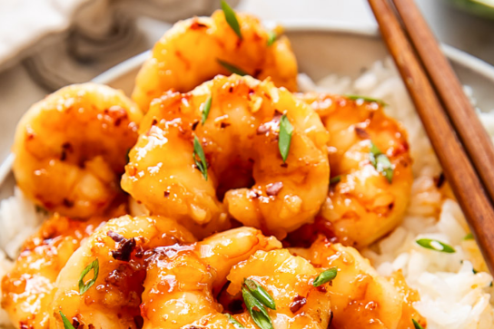

Honey-glazed Shrimps

Description
A delicious and easy-to-make dish that is perfect for a quick weeknight
meal. The shrimp are cooked in a sweet and savory sauce that is made with
honey, soy sauce, garlic, and ginger. The shrimp are cooked until they are
pink and cooked through, and the sauce is reduced until it is thickened
and glossy. Honey-glazed shrimps can be served over rice, noodles, or
vegetables. They are also a great addition to a salad or a wrap.
Ingredients
- 1 pound shrimp, peeled and deveined
- 1/4 cup honey
- 1/4 cup soy sauce
- 2 cloves garlic, minced
- 1 tablespoon ginger, grated
- 1/4 teaspoon red pepper flakes (optional)
- 1 tablespoon vegetable oil
Steps
-
In a small bowl, whisk together the honey, soy sauce, garlic, ginger,
and red pepper flakes (if using).
- Heat the oil in a large skillet or wok over medium-high heat.
-
Add the shrimp to the skillet and cook for 1-2 minutes per side, or
until pink and cooked through.
-
Pour the honey sauce over the shrimp and cook for 1-2 minutes, or until
the sauce has thickened and reduced.
- Serve immediately over rice, noodles, or vegetables.